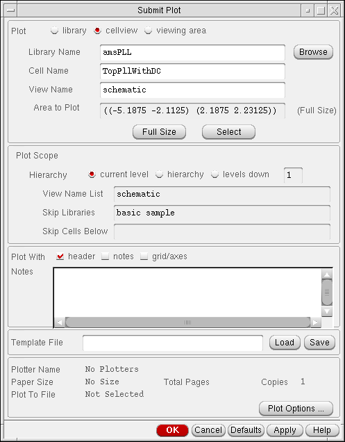
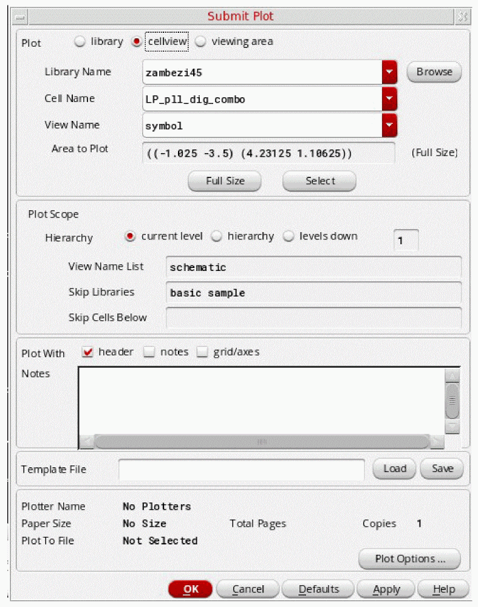
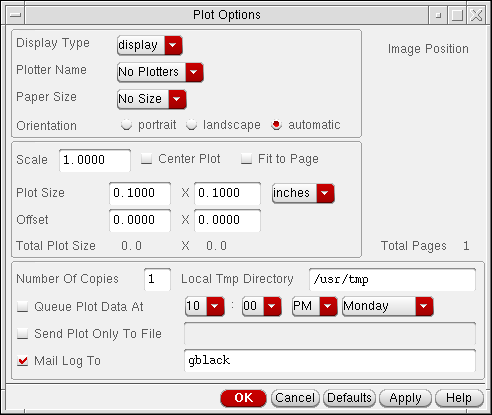

11
Plotting Designs
You can plot libraries, cellviews, or a portion of your schematic using one command form. Another form sets the plot options.
This chapter provides information about
- Setting Up System Options to Plot
- Setting Up Printer Options to Use Various Paper Sizes
- Plotting a Design
- Using a Plot Template File
- Checking the Queue Status
- Canceling a Plot Job
Setting Up System Options to Plot
To set up your system to plot to either a plotter or a laser printer,
- Install the hardware.
-
Configure the system.
Refer to your operating system documentation for specifics about your plotter.
For details about configuring your operating system for plotting, refer to Plotter Configuration User Guide. It discusses the.cdsplotinitfile that the Virtuoso® Schematic Editor uses. -
Set up the software.
Setting up the Cadence® software includes defining the correct plotting device (output device), which you define in your operating system. -
Create a site-specific version of the plot configuration file as detailed in Plotter Configuration User Guide.
Copy thecdsplotinit.samplefile from the your_install_dir/tools/plot/samplesdirectory to a new file called.cdsplotinitin either your working or home directory.
The.cdsplotinitfile is used to define the list of available printers and plotters and their characteristics.
Setting Up Printer Options to Use Various Paper Sizes
You can set up printer options to use various paper sizes either by using PostScript printer definition (PPD) files or by adding printer size options to the .cdsplotinit file.
For more information, see Plotter Configuration User Guide.
Setting Various Paper Sizes Using the .cdsplotinit File
To plot to a different paper size, you need to add a definition for another paper size to the .cdsplotinit file. Paper size choices appear in the Plot Options form when you plot using the File – Print command (then select Plot Options). The choices listed are specific to the selected plotter, and the information is read from the ~/.cdsplotinit file. For example, the following .cdsplotinit file has only one paper size, 8 1/2" x 11", defined:
Myprinter|Myprinter postscript: \ :spool=lpr: \ :query=lpq: \ :type=postscript2: \ :maximumPages#10: \ :resolution#300: \ :paperSize="8.5 X 11" 2400 3150 75 75:
Plotting a Design
You can plot any of the following:
- Library
- Current cellview
- Entire hierarchy starting from the current cellview or as many levels down as you want
- All sheets of a multisheet schematic by plotting from an index schematic cellview
Plotting a Library
-
From the view, choose File – Print.
The Submit Plot form appears.
 - In the Plot field, turn on library.
- In the Library Name and View Name List fields, type the library you want to plot and its views. You can also click Browse to select the library.
- Change other fields or options as needed.
- Click OK.
Plotting a Cellview
-
From the view, choose File – Print.
The Submit Plot form appears. - In the Plot field, turn on cellview.
-
In the Library Name, Cell Name, and View Name fields, type the complete path to the cellview you want to plot.
You can also click Browse to select the cellview. - Change other fields or options as needed.
- Click OK.
Plotting Part of a Schematic
To plot only the viewing area of a cellview,
- From the view, zoom in on only the object or area you want to plot by choosing View – Zoom In.
-
Choose File – Print.
The Submit Plot form appears. -
In the Plot field, turn on viewing area.
When you plot using the viewing area, you plot the cellview from which you started the Plot command. Only the area displayed in the graphic window is plotted. - Change other fields or options as needed.
- Click OK.
Plotting Without a Header Page for Every Session
To plot without a header page from a layout or a schematic,
-
From the view, choose File – Print.
The Submit Plot form appears. - Turn off Plot With header.
- In the Template File field, type a fully-qualified template file name.
- Click Save.
- Click Cancel.
-
Add the following commands in the
.cdsinitfile to point to the saved template file:
For layout:lePlotTemplate =
For schematic:path_to_the_template_file/name_of_the_template_fileschPlotTemplate =
path_to_the_template_file/name_of_the_template_file
Every Cadence session will now load the plot template files from the .cdsinit file and set the header off by default in the Submit Plot form.
Adding Notes to a Plot
To add notes to any type of plot,
-
From the view, choose File – Print.
The Submit Plot form appears. - In the Plot With field, click notes.
-
Type in the Notes field.
Specific editing commands apply.See Default Keybindings for Text Fields in the Virtuoso Design Environment User Guide - Click OK.
Setting Plot Options
You can set several plot options: plotter name, paper size, page orientation, size and position of plotting, area, number of copies, plot time, and plot to file.
-
From the view, choose File – Print.
The Submit Plot form appears. Specify the cellview (in the Library Name, Cell Name, and View Name fields).
 -
At the bottom of the Submit Plot form, click Plot Options.
The Plot Options form appears.
 - Set the options.
- Click OK on the Plot Options and Submit Plot forms.
Example of Use - Creating a Plot PostScript File
You can choose to plot as a PostScript file, then use a PostScript-to-PDF converter when you require to view or print.
For the following plotting to PostScript file example script to work you must:
-
Have a
.cdsplotinitfile in your home directory or the current directory. - Check the Send Plot Only To File option in the Plot Options form (and enter the file location).
Colour PS|Hewlett-Packard LaserJet, PS: \
:manufacturer=Hewlett-Packard: \
:type=postscript2: \
:spool=lp -d $PRINTER: \
:query=lpstat -o $PRINTER: \
:remove=cancel $1 $PRINTER: \
:maximumPages#30: \
:resolution#600: \
:paperSize="A4" 4758 6846 90 90:
Plotting a Color Schematic in Black and White
To plot designs in black and white instead of in grayscale,
-
For PostScript color plotters
In the.cdsplotinitfile, set the type entry totype=postscript1:\
:type=postscript2:\. -
For inkjet pen plotters
The standard entry in the.cdsplotinitfile denotes each color pen and its position as follows:white#
x represents the pen number.x:black#x:red#x:yellow#x:green#x:cyan#x:blue#x:magenta#x:\
A pen plotter maps colors to the pens in its pen carousel. The Cadence Plotting Services software supports eight colors for lines and stipple patterns. A pen plotter selects colors by the index (pen) number. The index number is the location of the pen in the carousel.
To plot in black and white, determine the position of the black pen and specify that position for all the other pens, except white, in the.cdsplotinitfile. The software then sends all the non-white color requests to the black pen for black-and-white plotting.
For example, if the position of the black pen is 5, specify the following in the.cdsplotinitfile:white#0:black#5:red#5:yellow#5:green#5:cyan#5:blue#5:magenta#5:\
Changing the Background Color of a Schematic Window
To change the background color of the schematic window,
-
Open the
.Xdefaultsfile in edit mode. - Change the background color using the defaultEditorBackgroundColor environment variable.
-
At the UNIX prompt, type
xrdb -load ~/.Xdefaults
- Restart your Cadence software.
If you do not know where your .Xdefaults file is located, you can change the background color of the schematic and layout windows by doing the following:
-
At the UNIX prompt, type
xrdb -query > xyz
This stores all the current system.Xdefaultsvariable settings in the filexyz. -
In the
xyzfile, change the background color using the defaultEditorBackgroundColor environment variable. -
At the UNIX prompt, type
xrdb -load xyz
-
Restart your Cadence software.If changing the default background color makes it more difficult to see wires of interest during interactive editing, you can change the default selection and highlight set color used by the schematic editor using the defaultDragColor environment variable. For example, to change the default drag color to dark red, type the following in the CIW:
envSetVal("ui" "defaultDragColor" 'string "darkRed")
Using a Plot Template File
If you want to use the same plot options for other schematics, you can store the options in a plot template file. The plot template file stores plot options in property list format. You can use a template file to plot schematics in batch mode.
Creating a Plot Template File
To create a plot template file,
-
From the view, choose File – Print.
The Submit Plot form appears. - In the Template File field, type the path to the directory in which you want to store the file.
- Complete the rest of the form to indicate all settings you want to save for plotting.
- Click Save.
- Click OK.
You can also create a plot template file using a text editor. The following list shows plot options that you can set. All of them map to a field on the Submit Plot form.
library ; text field
cell ; text field
view ; text field
version ; text field
scope ; text field, "/" should be the default.
bBox ; not set when "Area Fit" is selected.
multisheet ; set when "All Sheets" or "Start Sheet" is set.
startsheet
endsheet
indexsheet ; set when "Plot Index Sheets" is set.
header ; set when "Plot Header" is set.
hierarchy ; set when "Herarchy" or "Levels Down" is set.
hierleveldown
viewlist ; set when hierarchy is set.
ignorelibs ; set when hierarchy is set.
stopcells ; set when hierarchy is set.
time
copy
outputfile
; plotter options form plotter papersize plotsize offset unit orientation display tmpdir mail ; new options plot ; current value of plotAreaRadio
area ; current value of plotAreaCyclic
notes ; current value of plot notes
noteText ; current value of user header
You can put the following sample information in the .cdsinit file and use it as a single cellview plot template file:
schPlotOptions = ’(nil
library "mylib"
cell "mydesign"
view "schematic"
version "0.0"
multisheet nil
indexsheet nil
hierarchy nil
copy 1
outputfile ""
plotter "MP Imagen"
papersize "A"
plotsize (200.0 165.0)
offset (0.0 0.0)
unit "mm"
orientation "Automatic"
display "display"
tmpdir "/usr/tmp"
mail t
)
The following two files are samples for a hierarchical plot template file:
schPlotOptions = ’(nil
library "mylib"
cell "mydesign"
view "schematic"
version "0.0"
multisheet nil
indexsheet t
hierarchy t
hierleveldown 2
viewlist "schematic"
ignorelibs "basic sample"
stopcells ""
copy 1
outputfile ""
plotter "MP Imagen"
papersize "A"
plotsize (8.0 6.5)
offset (0.0 0.0)
unit "inches"
orientation "Landscape"
display "display"
tmpdir "/usr/tmp"
mail nil
)
schPlotOptions = ’(nil hierleveldown 0 area "whole" version "0.0" multisheet nil indexsheet nil hierarchy nil copy 1 outputfile "" plotter "" papersize "A" plotsize (10.5 8.0) offset (0.0 0.0)
unit "inches" orientation "Automatic" display "display"
tmpdir "/usr/tmp"
mail nil
header nil
notes nil
grid nil
noteText ""
scope "/"
)
Loading a Plot Template File
When you load a template file, the system reads in plot setup information that you have previously saved.
-
From the view, choose File – Print.
The Submit Plot form appears. -
In the Template File field, type the path to the file you want to load.
You can also type the path to one of the sample plot template files:your_install_dir/tools/dfII/samples/plot/schPlot.ilyour_install_dir/tools/dfII/samples/plot/schMetPlot.il - Click Load.
- Click OK.
Creating a Default Plot Template File
To create a default plot template file,
-
Add the following line to your
.cdsinitfile:schPlotTemplate = "
The system loads the default plot template file when you use the File – Print command for the first time. Once you change the path in your/usr/myPath/myTemplate".cdsinitfile, you can use the Load button on the Submit Plot form to load other template files.
Checking the Queue Status
To check the status of your plot in the queue,
-
From the view, choose File – Print Status.
The Plot Job Queue Status/Removal form appears. -
In the Select Plotter cyclic field, choose the plotter to which you sent your schematic.
The system displays the plot job queue in the text box.
Canceling a Plot Job
-
From the view, choose File – Print Status.
The Plot Job Queue Status/Removal form appears. - In the text box, click the job you want to cancel.
- Click Cancel Selected Plot Jobs.
- Click OK.
Return to top